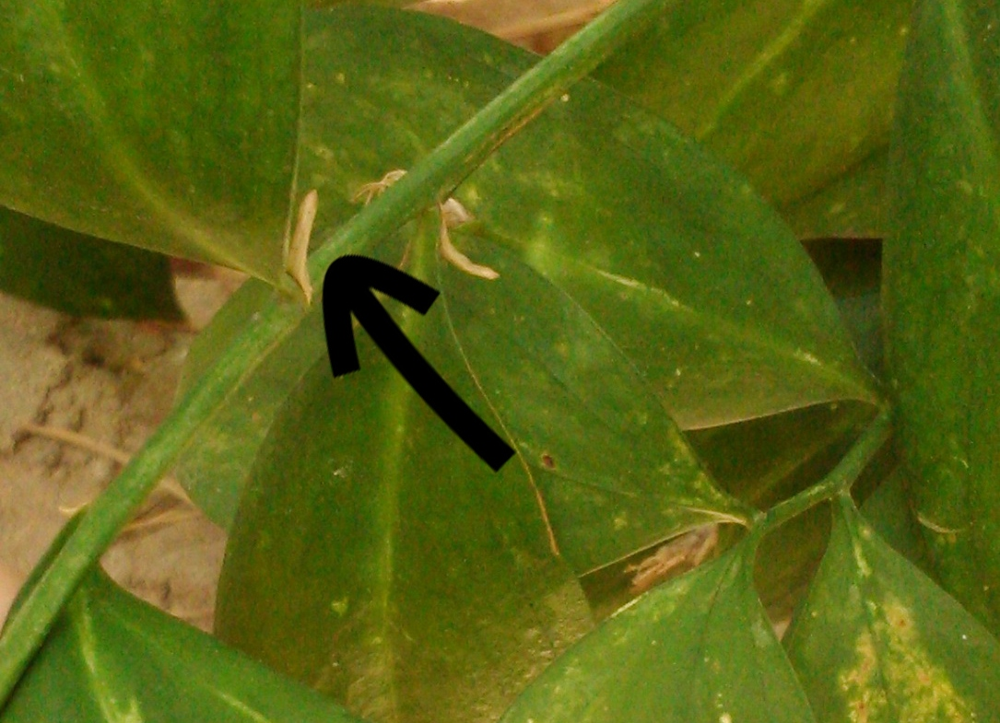
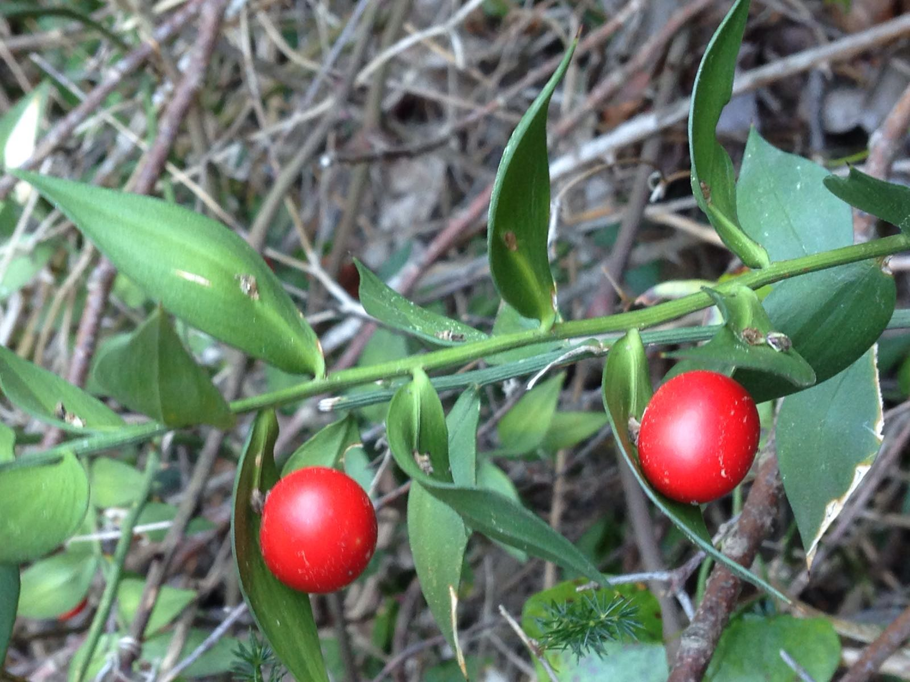
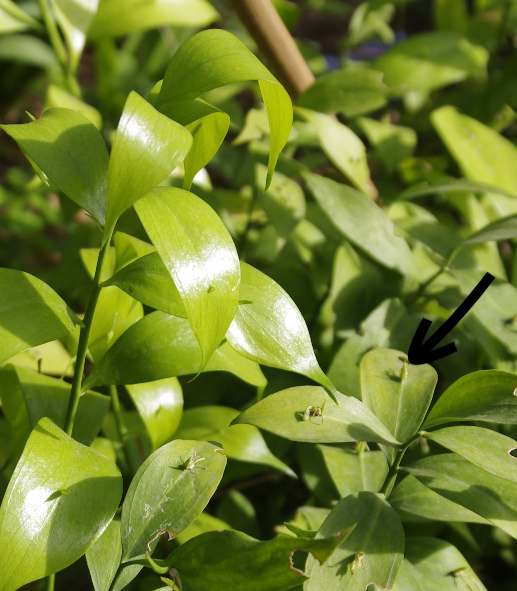

Ruscus aculeatus L. - Rusco
¿Sabías que las hojas del Rusco no son hojas en realidad? Lo que estás viendo son unos tallos aplanados y dispuestos en forma de falsa hoja, unidos a su tallo principal. Las hojas del Rusco son una pequeña escama triangular (muchas veces se cae y no se puede ver bien, pero en la foto las hemos señalado con la flecha negra) que se puede encontrar en la base de los tallos aplanados.

Los pescadores del pueblo de El Saler utilizaban las ramas del Rusco para pescar sepias. Además, tiene muchas propiedades medicinales y se usa para combatir las varices, la gota y la artritis eliminando el ácido úrico, ya que es diurético.
Tanto en primavera como en invierno y dependiendo de la cantidad de luz, el Rusco puede mostrar sus pequeñas flores al comienzo de estos tallos aplanados con forma de hoja.

Al tener unas hojas tan pequeñas, el Rusco realiza también la fotosíntesis por sus tallos. Esto es así porque las plantas pierden agua por las hojas y el Rusco, al hacer sus hojas tan pequeñas, evita que pierda demasiada agua y de este modo pueda sobrevivir a los veranos tan secos que tenemos en el Mediterráneo.

Si quieres comprobar cuanto sabes del Rusco selecciona a continuación tu nivel educativo